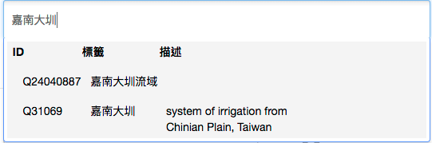

Metadata Analysis#
在創建資料集時，使用者會被要求填答後設資料以利檢索或是分析，這裡收集了depositar各種後設資料的填答情況。
metadata example#

後設資料分類
本平台的後設資料（metadata）欄位包括「資料集」與「資源」兩階層。資料集層級
計有「基本資訊」、「時空資訊」與「管理資訊」三大部分。基本資訊#
name |
require |
Description |
|---|---|---|
標題 |
否 |
建議以簡單扼要的方式描述，如「台灣各縣市之人口密度」較「人口統計圖表」來的具識別性 |
網址 |
是 |
網址為本平台上資料集唯一的識別碼，僅能為英數字及部分符號。網址會在您輸入資料集標題時自動產生。若標題內含有英數字（及部分符號），則產生之網址為該英數字（同時去除所有非英數字之文字）；若標題不含英數字，則系統會為您產生一組隨機英數字。您可隨時修改自動產生之網址 |
摘要 |
否 |
記錄關於此資料集的細節內容，或是任何其他使用者可以進一步了解此資料集的資訊 |
資料類型 |
是 |
資料集所屬之類型 |
Wikidata 關鍵字 |
否 |
搜尋 Wikidata（維基資料）項目選取關鍵字以描述資料集 |
標籤 |
否 |
標籤欄位可協助使用者更容易找到該筆資料集，例如您可加上「人口」、「犯罪」等標籤。此欄位只用於您專案或資料集的標記。 |
語言 |
否 |
本項目說明資料集內容所使用之語言，如歷史文獻可能為華語、日語、西班牙語系等。選項將先列出主要語言（依據維基百科：World language 條目），再依照 ISO 639-3 語言編碼字母排序列出。語言名稱翻譯取自 debian iso-codes 專案。 接受多值。限使用 ISO 639-3 語言編碼。 |
備註 |
否 |
描述資料集的額外資訊。 |
時空資訊#
name |
require |
Description |
|---|---|---|
時間解析度 |
否 |
請參考空間範圍填寫輔助功能。 |
起始時間 |
否 |
同上 |
結束時間 |
否 |
同上 |
空間範圍 |
否 |
請參考空間範圍填寫輔助功能。 |
空間範圍.X.min |
否 |
同上 |
空間範圍.X.max |
否 |
同上 |
空間範圍.Y.min |
否 |
同上 |
空間範圍.Y.max |
否 |
同上 |
空間解析度 |
否 |
資料的空間解析度數值，以公尺為單位 |
管理資訊#
name |
require |
Description |
|---|---|---|
授權 |
是 |
宣告本資料集所使用的授權，提供後續使用者應用之參考。若不在候選清單內，請選擇「其他授權」，並於基本資訊之「備註」欄位註明授權條款 |
產製者 |
是 |
資料生產者或單位的名稱。 |
資料產製時間 |
否 |
資料集檔案產出時間。 |
資料處理歷程 |
否 |
以文字描述資料形成所經過之處理過程，建議以各階段或步驟為導向進行填寫 |
專案 |
否 |
若您屬於任一專案之成員，則您可於專案欄位之下拉選單內找到您所屬的專案清單。若選擇「不屬於任何專案」選項，此資料集將不屬於任何專案，且將會被強制設定為「公開」資料集 |
聯絡人 |
否 |
本資料集主要維護人員。 |
聯絡人的電子郵件 |
否 |
本資料集維護人員之電子郵件信箱。 |
資源層級#
name |
require |
Description |
|---|---|---|
網址 |
否 |
線上資源的連結位址 |
名稱 |
否 |
本筆資源的名稱。資料集內不同的資源應用不同的名稱區別。 |
摘要 |
否 |
關於資源的簡短描述 |
字元編碼 |
否 |
此資源所使用之編碼系統，如 UTF-8、Big5 等。目前僅用於 shapefile 資源 |
座標參考系統 |
否 |
當您所新增之資源為 shapefile 檔案，且未提供投影格式（.prj）檔案時，則需另外填寫此欄位，否則將無法開啟預覽功能。採用 EPSG （歐洲石油測量組織）編碼。 |
格式 |
否 |
資源的檔案格式，例如：CSV、XLS、JSON、PDF 等。格式填寫內容將會影響本平台所設定的資源預覽的預設畫面。 |